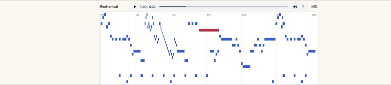

MIDI Humanization — Diffusion Transformer
When I compose, I usually notate in MuseScore — but exported MIDI often sounds flat. Human pianists shape dynamics, accent, and colour even when the notes on the page stay fixed. This project learns that expressive layer from real performances.
A compact diffusion transformer (about 685k parameters: four layers, RoPE, SwiGLU) is trained on 678 aligned classical recordings from corrected (n)ASAP-style alignments. At inference it rewrites velocity only; pitch and timing stay untouched. Sampling uses a 200-step DDPM denoiser in PyTorch.
Listen & compare on the piano pageTechnical notes
Public demo focuses on the velocity-only checkpoint (~2.6 MB). Examples include an original piece (Perpetuity) and openings of Chopin and Liszt works. Upload your own flat MIDI when the hosted API is connected.